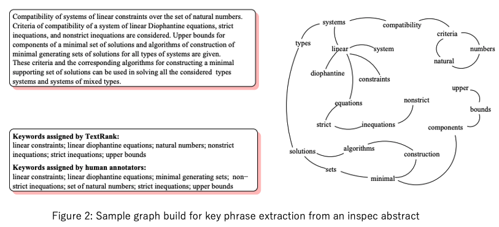
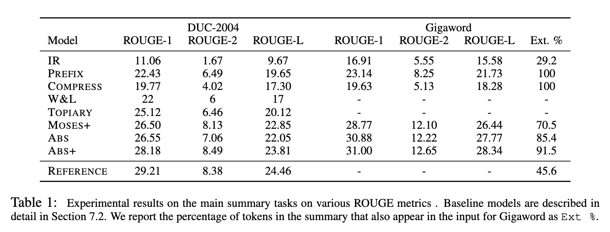
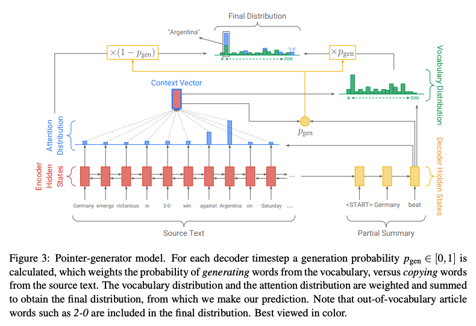
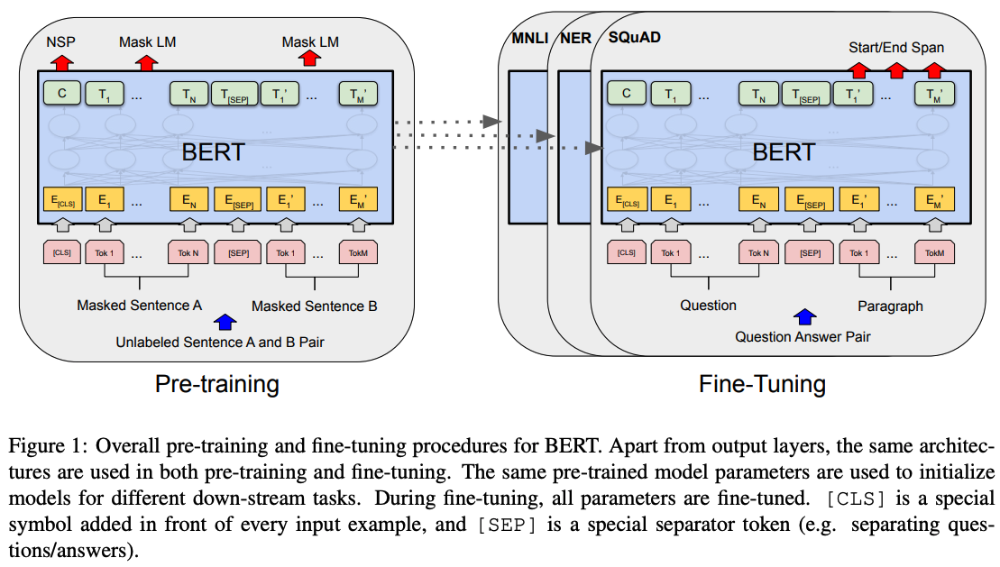

言語情報解析演習III_中間レポート
< 文書要約の変遷 >
-
2000以前 - 2014
-
ニューラル言語モデルが登場しておらず、様々な角度からのアプローチが試された。
e.g.
-
木構造で表した文において重要な構造だけを圧縮する手法
[Knight and Marcu, AAAI-2000]
-
グラフ構造で表したテキストの関係をもとに要約する手法
(TextRank)
[Mihalcea and Tarau, EMNLP-2004]

-
トピックベースのアプローチ
[Ozsoy el al., 2011]
-
タスクの基礎が固まっておらず、解きたい問題や評価方法についての試行錯誤が繰り返された
(ROUGE [Lin, ACL-2004] の登場もこの頃)。
-
2015
-
抽出型要約 (入力文書から重要な文字列 (文) を抜き出すアプローチ)
に代わり、抽象型要約が登場。
-
ニューラル言語モデル (とりわけ Encoder-Decoder モデル
[Sutskever et al., NIPS-2014])
の登場により、入力側にない情報を出力することが可能となる。
→ 抽象型要約の登場につながる。
-
Attention-Based Sequence-to-Sequence
[Baudanau et al., ICLR-2015]
をもとにして作られたニューラル要約モデル
[Rush et al., EMNLP-2015]
は、ROUGE
スコアにおいて既存のあらゆる手法を上回る結果を叩き出した。

-
2016 - 2018
-
抽象型要約のみが持つ「抽出型要約にはない弱点」を克服するための取り組みが行われる。
→ 弱点: 不要な情報を多く生成してしまうこと。
- 軽度: 冗長な文を生成してしまう。
- 重度: 矛盾する情報を生成してしまう。
-
対策:
[Suzuki and Nagata, 2016]
や Pointer-Generator Networks
[See et al., ACL-2017]
によって、入力文書の単語をそのまま要約として出力する等の工夫がなされる。

-
その他、Attention
の当て方についての議論が行われたり、複雑なネットワークを構築するタイプの論文が多く採択されたりするなどした。
→
モデルの複雑化が進む。
-
2019
-
BERT
[Devlin et al., NAACL-2019]
の登場により、抽出型要約が再び流行する。

-
「抽出型要約 = 文の二値分類 (重要 / 重要でない)
タスク」として捉えることができる。
→ Fine-tuning
によって分類タスクに適応させることでシンプルに実装可能。
e.g.
-
HIBERT
[Zhang et al., ACL-2019]
-
BERTSum
[Liu and Lapata., EMNLP-2019]
-
その他、複数の文書を入力文書とする抽出型要約モデルが提案されたり、クエリフォーカス要約にも
BERT が用いられたりするなど、BERT
の汎用性を活かした様々なアプローチがなされた。
-
2020
-
BERT よりも優れた事前学習済みモデルの作成を試みるのが近年の流れ。
-
汎用言語モデルのみならず、要約に特化したモデルにもフォーカスがあたる。
e.g.
-
従来よりも少ないデータで SOTA を達成した PEGASUS
[Zhang et al., ICML-2020]
-
未来の系列を訓練する ProphetNet
[Yan et al., EMNLP-2020]
-
デコード時の露出バイアス (Exposure Bias) に取り組んだERNIE-GEN
[Xiao et al., 2020]
↑ これらは BART
[Lewis et al., ACL-2020]
からインスピレーションを受ける。